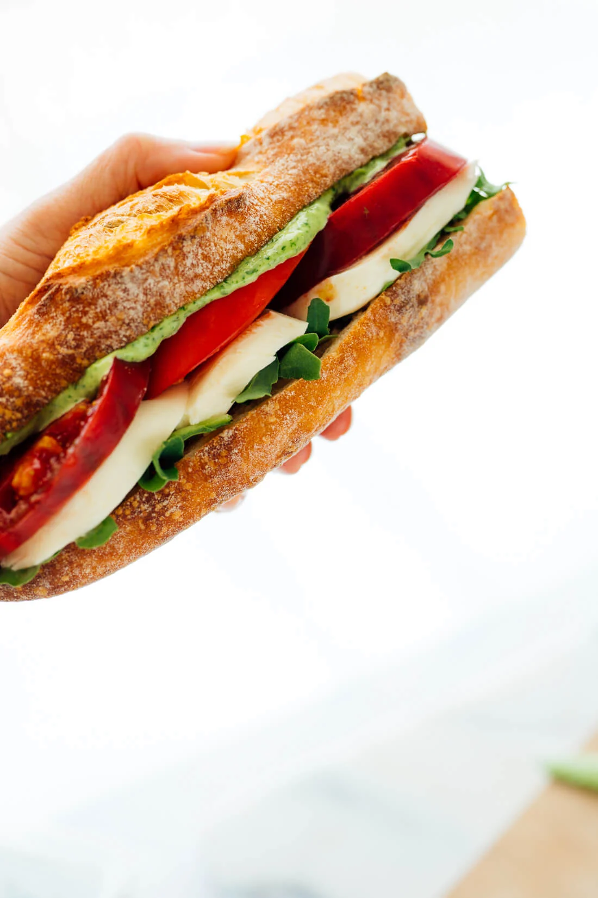

I find lunch the hardest meal to figure out.
When in doubt I always turn to a sandwich, sandwiches can be all over the board but I especially love simple sandwiches.

A Caprese Sandwich is one of the most refreshing meals you'll ever have. When in doubt this is what i'll eat for any meal